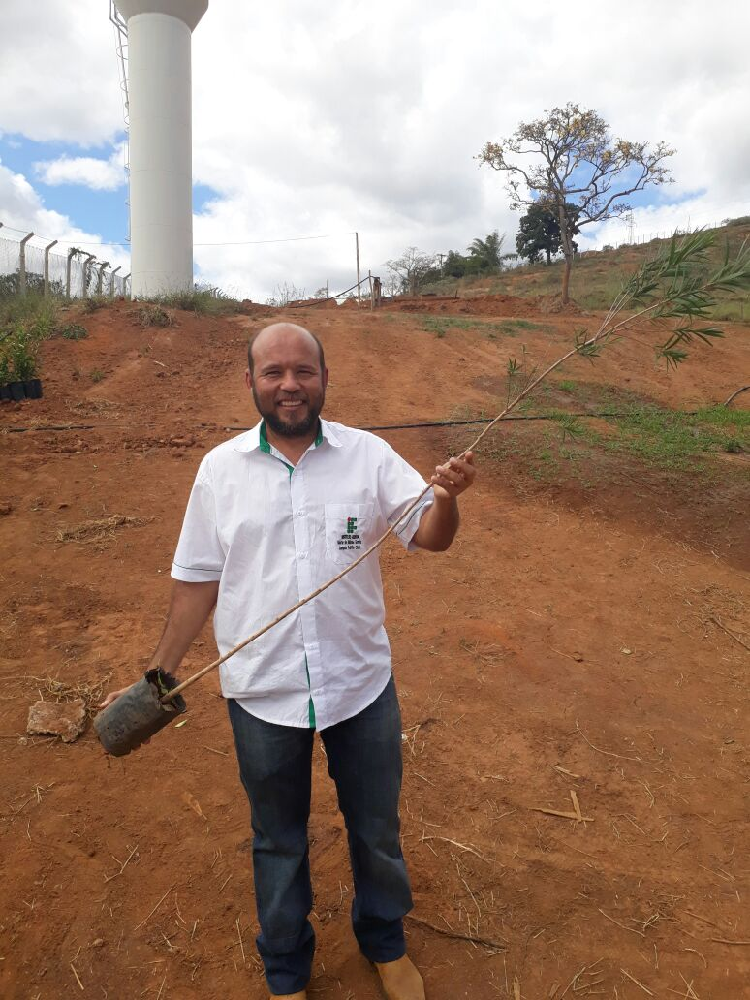
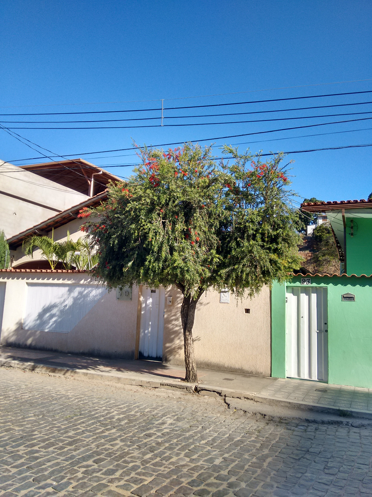
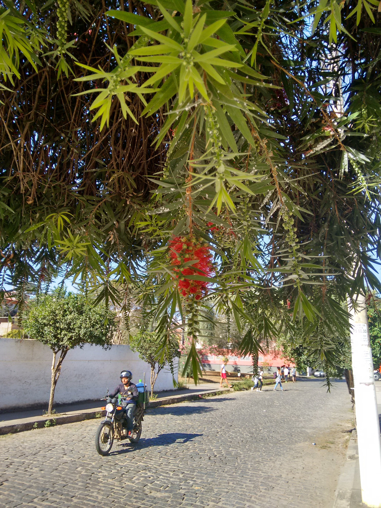
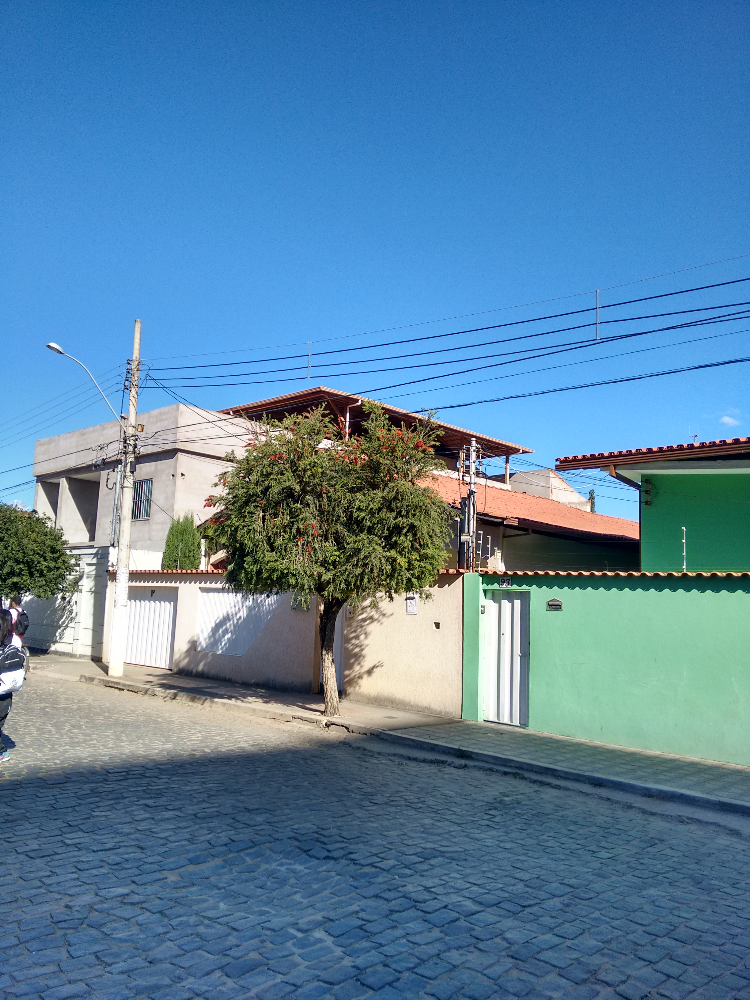
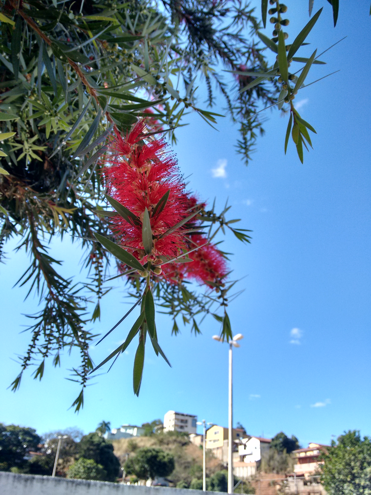
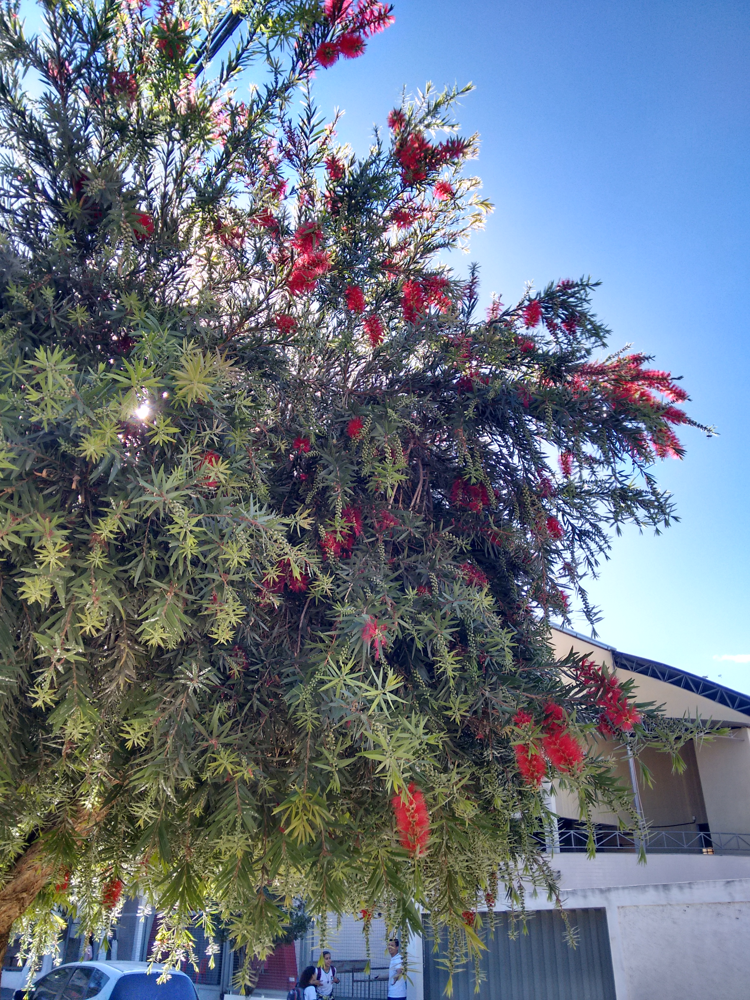
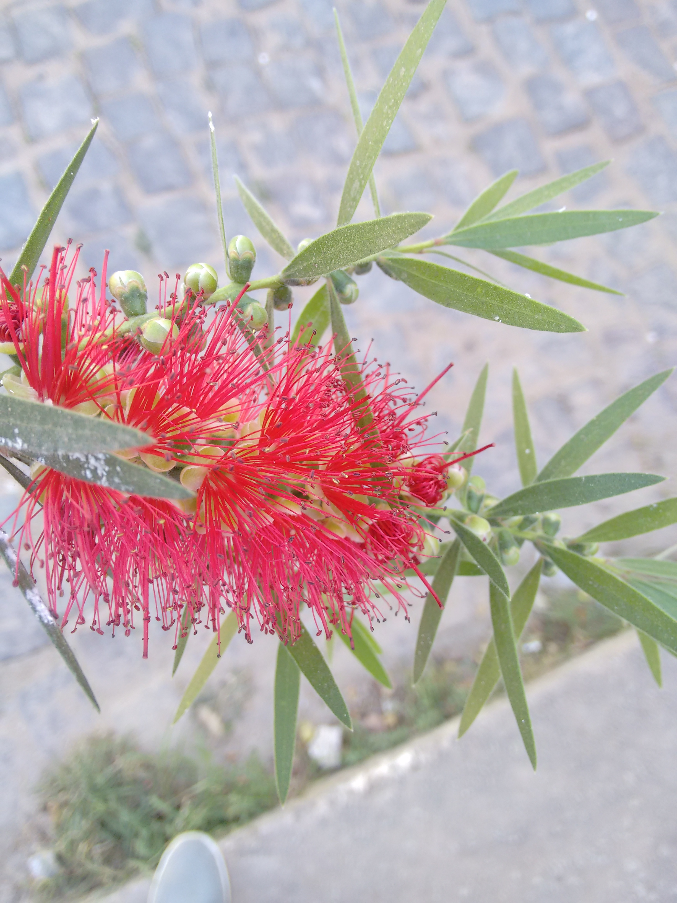
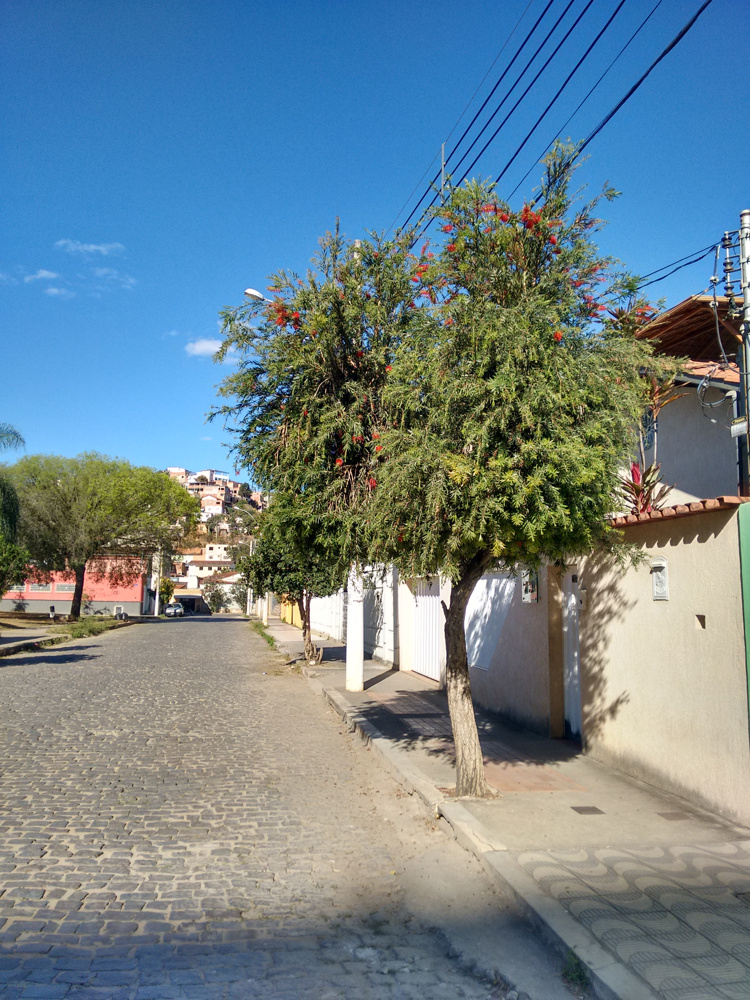
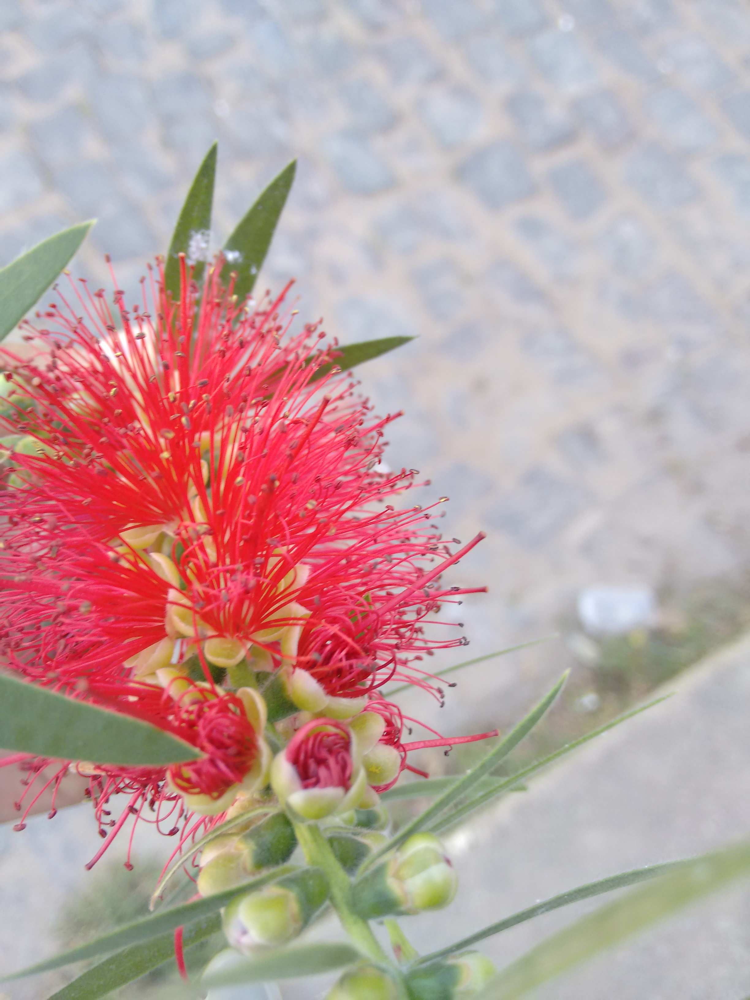

Escova-de-Garrafa
É uma espêcie de origem australiana tendo grande utilidade na ornamentação de centros urbnos devido sua inflorescência,atraindo os olhares.


Caracteristicas Gerais
-
- Folhas: Suas folhas são verdes, lanceoladas.
- Flores: Suas flores são o produto de inflorescência possuem um vermelho-viva, sua estrutura lembra uma escova de garrafa.
- Frutos: São secos, pequenos e lenhosos.
- Ciclo de Vida: Perene.
- Tipo de solo: Todos os solos,exceto os solos alagados.
- Familia: Myrtaceae, 34 espécies catalogadas.
- Clima: Tropical,sub tropical,temperado e mediterraneo com temperaturas entre 15º e 40º.
- Tamanho: Varia entre 3 e 7 metros.
Fotos
-
 -
 -
 -
 -

-
 -
 -

Navigate with arrow keys
Campus Teófilo Otoni
Alunos:Guilherme Moreira Campos
Igor Dias Costa de Jesus
Igor Dias Costa de Jesus